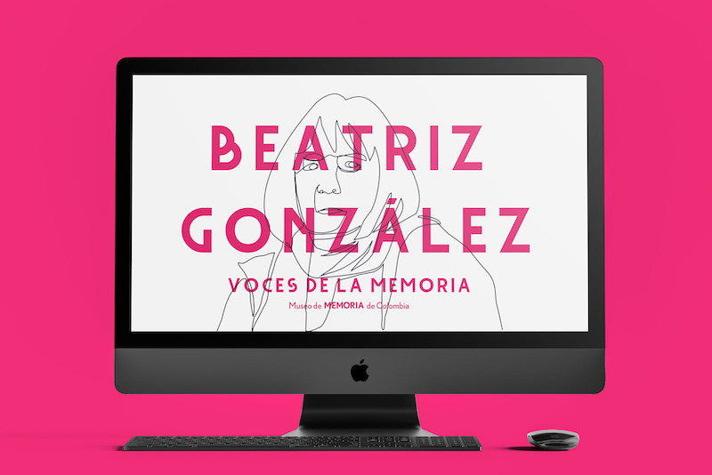
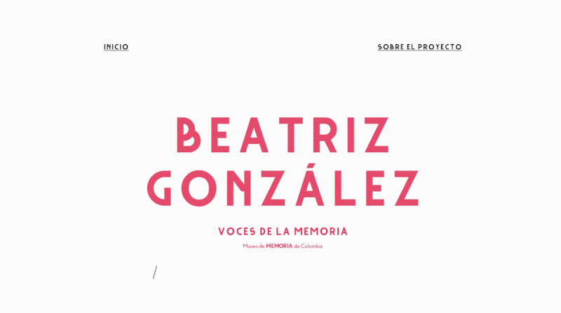
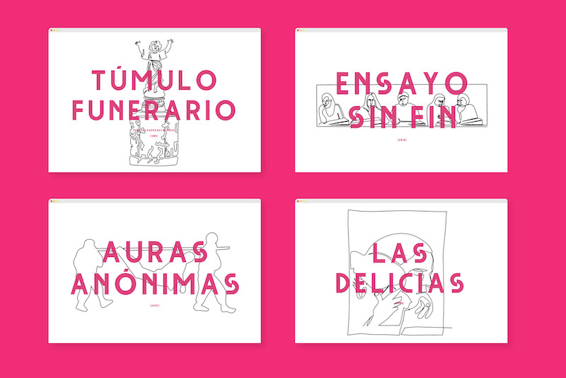
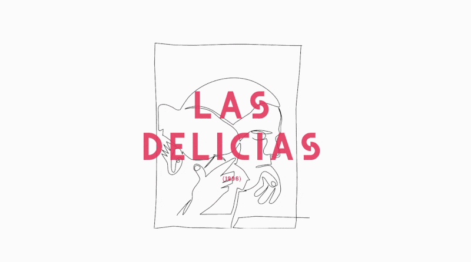
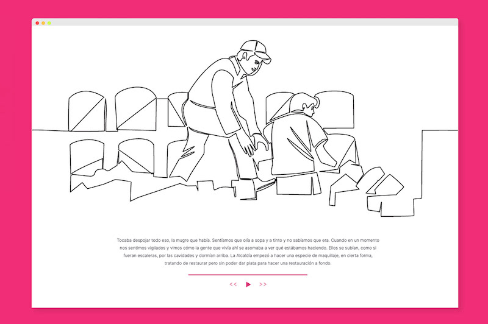

Since the 1980s, artist Beatriz González has dealt with Colombia's armed conflict themes through drawing, painting, printmaking and sculpture. The main sources of her work are images from newspaper articles published in the national press.
Voices of Memory is a digital exhibition of 5 of González's works where the artist's voice guides visitors through different historical events of Colombian violence and her work.
Visit the exhibition → museodememoria.gov.co/bga
Role: Web Development, Graphic Design and Illustration
Technologies: WordPress, HTML, CSS, JavaScript




